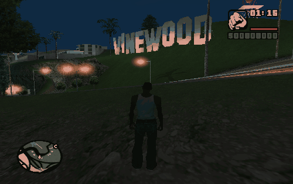
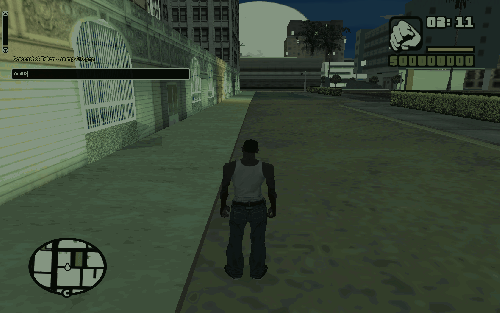
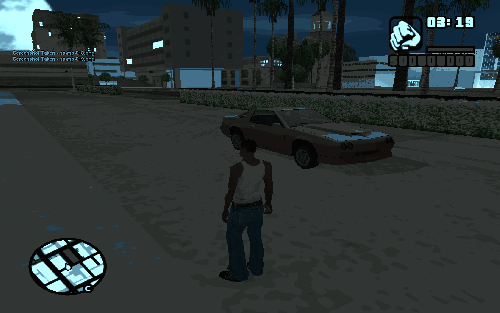
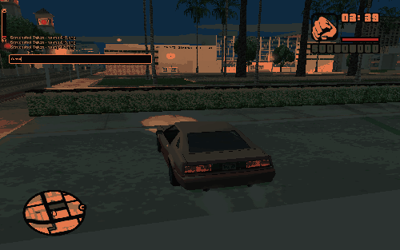
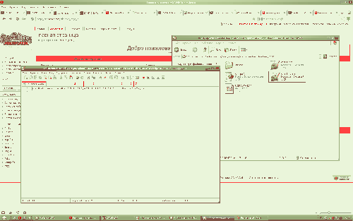

Расстановка транспорта
From SA-MP Wiki
Для расстановки транспорта можно использовать свой сервер, но мы расскажем про SA-MP Debug.
После установки мультиплеера (sa-mp), заходим в директорию игры, ищем файл samp_debug.exe, запускаем и нажимаем "Launch Debug".
В игре вы начинаете Лос-Сантос (у надписи VINEWOOD).

Двигайтесь в нужное место, можно использовать и транспорт:
Для спавна в консоли введите /v *номер*,где вместо *номер* укажите числовой код (ID транспорта) нужной машины.

Выбрали место? Вписывайте /save и данные будут записаны.

Когда вы поставили транспорт, сворачивайте игру и открывайте файл Мои документы\GTA San Andreas User Files\SAMP\savedpositions.txt

Справка: Используется функция AddStaticVehicle
В файле будут записаны координаты, цвет и модель машин или координаты и скин игрока (если использовать команду /save не в транспорте)
Прошу прощения за такое качество уменьшенных изображений, оригинал в норме. Кликабельны.

{kind=link}
{kind=link}
{kind=link}
{kind=link}
{kind=link}